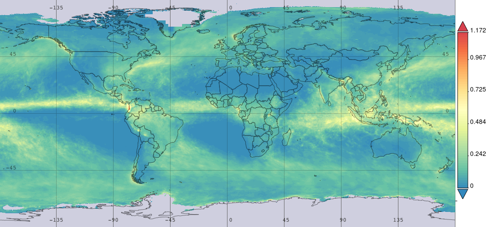

With a refreshed mission statement of this serial:
Using proven tools to improve carbon capture by biological systems
and the reframing
Decarbonization Replenishment of geologic carbon
I’m ready to explore a third potential approach to climate control.
As a refresher, the two ways I’ve explored thus far are:
Ocean desalination to produce large quantities of irrigation-grade fresh water, either employing offshore nuclear reactors (the US Navy already does this) or nearshore dedicated solar PV arrays. This is a proven method to create soil organic carbon and economic value1.
A biomass capture, removal, and sequestration (BiCRS) system that starts with existing, concentrated biomass sources: Tropical rainforests.2 This is anathema to environmentalists, but it’s supported by the data rather than a complex model or an animistic belief. The only caveat is that the harvest should be converted into useful, ideally non-biodegradable, material (wood, bioplastics, biochar) to drive economics and more durable sequestration3.
Over the next few installments, I will contemplate a third way. It is an extension of the first, providing enough fresh water for agriculture to capture significant carbon without adding carbon dioxide to the atmosphere. The crux of the problem is that removing salt from water is energy intensive; The heart of the solution is that desalination for irrigation is less energy-intensive (and more economically productive) than removing carbon dioxide from the atmosphere.
While not a fully refined or independent concept, as I’ve continued to write, I’ve become more convinced that fresh water, not carbon dioxide, is at the core of the climate problem. That’s amplified by the intimate connection of rainfall and what we call “climate”, a condition defined by two measurable and codependent parameters, precipitation and temperature.
Water is the common thread between the two solutions: We bring more water to dry land to create more biomass or remove biomass from ecosystems where water is abundant, and regrowth is rapid.
This third way comes from realizing that a significant proportion of the enormous quantity of solar energy the planet absorbs goes naturally toward desalination! To wit:

Note that the color scale is in inches of precipitation per day, with the highest value just off the coast of Colombia near Golfo de Tortugas, where it rains over 30 feet per year (!). But, most notably, there is a band of precipitation around the Equator, where the vast majority of rain falls back into the ocean, a futile desalination cycle. Those equatorial shower bands suggest annual rainfall of around 12 feet over enormous areas.
So, here’s the concept I will try to elaborate upon: Suppose we collected this rainfall and then transported it to coastal deserts for irrigation. That would require neither nuclear power nor solar arrays, only collection, and transportation. And, we’ve known for centuries how to transport cargo on the oceans without using geologic carbon (it’s called “sailing”). For example, an oil “supertanker” can carry about 260 acre-feet of liquid. At least conceptually, parking a supertanker under these downpours and collecting the rainfall with a funnel covering 260 acres would fill the tanker in a month. Then, sailing the cargo to tanker ports near coastal deserts would allow this water to be used for irrigation.
This concept is the industrial equivalent of a cistern, but installing such a system presents significant logistical/engineering concerns, among them:
How could a funnel be deployed? Would it be anchored or deployed upon demand?
How big would a sail need to be to move a supertanker full of water? Is it practical to sail from the Equator (famous for the doldrums) on a reliable basis?
How many transport vessels might be needed to move enough water to make a difference?
Rainfall is annualized—does seasonality make a difference?
How much energy could be collected and stored with the hydropower of the rainfall? Would it be practical to use that stored energy to offload the cargo?
For continuity, let’s pick a ripe target for conceptual deployment: Place the collection point in the Southern Indian Ocean (west of Indonesia) and transport the fresh water to the North West Shelf of Australia. This is an underpopulated mining area we discussed earlier, and pipeline infrastructure already exists there. Please comment on any areas that might stop this idea from being implemented, as it’s early in the process, so it’s the best time to kill it!
Eventually, we’ll have to consider what it might cost, but energy-wise, it ought to be much more efficient. More next time!
Thank you for reading Healing the Earth with Technology. This post is public so feel free to share it.

Removal alone, at scale, may be sufficient to adjust Earth’s thermostat, but the areal carbon capture of the cleared land can be roughly doubled if replanted with C4 plants like sugarcane and corn.